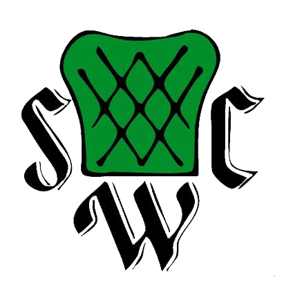

Van Ambachtelijk Kussen naar Serene Boog
Het nieuwe beeldmerk van Schipper Compact Wonen is een doordachte gestileerde evolutie van het oorspronkelijke 1989-embleem. Het gecapitonneerde fauteuilkussen transformeert naar een serene Scandinavische boog, terwijl de gotische monogramletters zich openvouwen tot een eigentijds woordmerk.

← Sleep de schuifknop naar links of rechts om het originele 1989-embleem met het 2026-beeldmerk te vergelijken →
1. Vormtransformatie
De zachte, ingesnoerde kussenflanken zijn strakgetrokken tot de zuivere geometrie van een architectonische boog. De ruitstiksels vervagen naar een rustgevend egaal vlak, wat rust en ruimtelijkheid creëert.
2. Kleurharmonie
Van het felle medische smaragdgroen (#048C2B) naar een warm Scandinavisch saliegroen (#A3B18A) gecombineerd met diep bosgroen (#2D3A2F) en linnen, passend bij modern interieur.
3. Monogram & Typografie
De zware gotische 'S', 'C' en 'W' initialen transformeren: de centrale 'S' verhuist naar het hart van de boog in een vorstelijke serif, terwijl Compact Wonen als volwaardig woordmerk ernaast straalt.